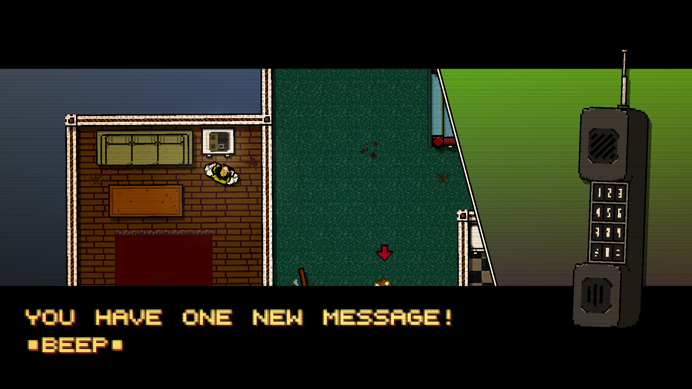

CAPITULO I
PHONECALLS
Recibes un mensaje cifrado en tu contestadore indicandote que has recibido un paquete, una vez decides abrirlo obtienes una máscara de gallo y una ubicación desconocida, parecería ser una equivocación, pero, en realidad has sido encargado con la tarea de eliminar a todos los rusos en la ubicación dada. Así comienza tu primer trabajo con las llamadas. Con el tiempo sigues cumpliendo con estas misiones y se vuelve parte de tu rutina.
